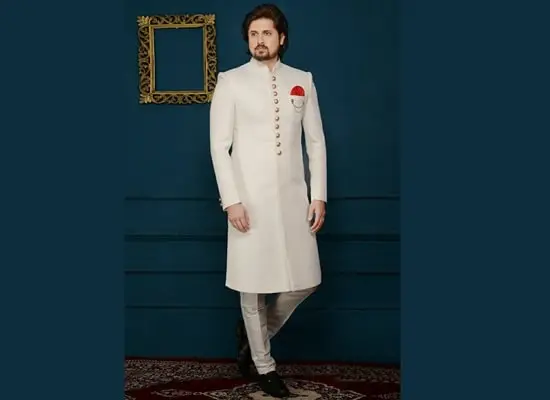

Hyderabadi Sherwani
Sherwanis are a rich combination of royalty and elegance. They are a pair of long kurtas with loosely fitted pyjamas adorned with an expensive shawl and a turban. Sherwanis are mainly worn during special occasions, marriages, and festivals. They are typically made of nylon fibre with a blend of dark colours embedded with shiny stones.